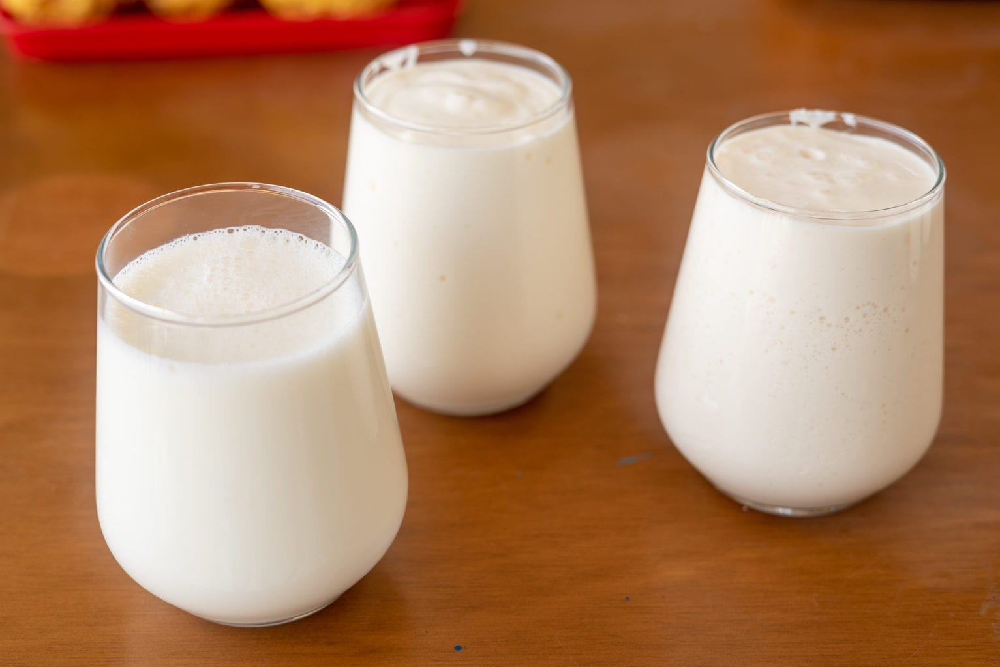

O iogurte é uma forma de leite em que a lactose (um tipo de açúcar) foi transformada em ácido láctico, por fermentação bacteriana. Esse processo faz com que o alimento seja mais suave que o leite em si, o que permite que algumas pessoas com quadros leves de intolerância à lactose consigam consumir iogurte sem problemas.O iogurte pode ser sólido ou líquido.Trata-se de um líquido espesso, branco, levemente ácido e muito nutritivo, que pode ser encontrado em várias versões, como o iogurte desnatado, o iogurte grego e existem também versões de iogurte vegano.
O processo de fazer iogurte não é difícil e a bebida traz diversos benefícios, como: melhoria da saúde óssea,ajuda no controle da pressão alta, ajuda a perder peso (especialmente na versão desnatada) e melhora a função digestiva, já que é considerado um alimento probiótico.
Um estudo realizado por cientistas norte-americanos afirma que o iogurte pode reduzir em até 20% o risco de pressão alta, especialmente em mulheres. A médica cardiologista Patricia Rueda explica que o estudo reafirma que hábitos de vida saudáveis diminuem o risco de doenças cardíacas e de doenças associadas, como a hipertensão, que é uma das principais causas de infarto e AVC na população geral.
O iogurte tradicional é resultado da fermentação do leite por bactérias probióticas. Esse processo melhora a digestibilidade do alimento, o que faz com que o iogurte em geral seja menos indigesto que o leito fresco. O iogurte natural é fonte de vitaminas, cálcio e proteínas, mas em geral seu preço é um pouco elevado. Mas não é difícil fazer iogurte natural em casa – e, se você tem intolerância a lactose ou não consome produtos de origem animal, saiba que também é possível fazer iogurte sem lactose e até um iogurte vegano com probióticos.
Modo de preparo Retire o iogurte da geladeira e deixe em temperatura ambiente; Preaqueça o forno a 240 ºC por 15 minutos. Depois, desligue o forno e deixe a porta fechada para manter o calor; Enquanto o forno aquece, coloque o leite em uma panela média e leve ao fogo baixo. Mexa delicadamente com uma espátula por cerca de 15 minutos até começar a formar espuma na superfície; Não deixe ferver. Nesta etapa é importante mexer para impedir a formação de nata. Se você estiver usando um termômetro culinário, meça a temperatura e desligue quando o leite atingir 90 ºC; Transfira o leite para uma tigela de cerâmica, vidro, ou panela de ferro – quanto mais calor o recipiente retiver, melhor; Espere o leite amornar, mexendo de vez em quando. Para verificar a temperatura, coloque o dedo indicador dentro do leite – você deve conseguir mantê-lo por 10 segundos. Se estiver usando um termômetro culinário, a temperatura ideal neste momento é 45 ºC; Esse é ponto chave da receita: se o leite estiver muito quente, mata os micro-organismos responsáveis pela formação do iogurte; se estiver muito frio, não estimula o crescimento e atividade dos micro-organismos. Numa tigela pequena coloque o iogurte e misture bem com uma concha do leite morno até dissolver. Acrescente a mistura ao restante do leite, misturando delicadamente. Leve a mistura para fermentar: tampe a tigela com filme e embrulhe num pano grosso ou cobertor – a ideia é manter o leite aquecido. Coloque a tigela embrulhada dentro do forno aquecido (desligado) e deixe por no mínimo 8 horas até formar o iogurte (esse processo pode levar de 8 a 12 horas, dependendo da temperatura ambiente). Se preferir, em vez de fermentar a mistura na tigela grande, você pode distribuir em potes de vidro individuais e com tampa.
Ingredientes1 litro de leite integral tipo A 1 pote de iogurte natural sem açúcar (170 g) |
 |